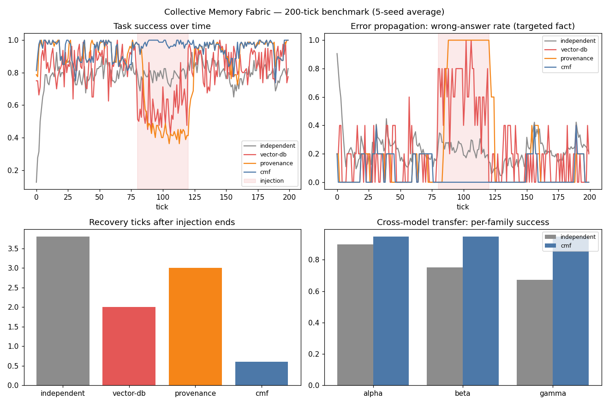

A model-agnostic collective memory protocol for multi-agent systems
Heterogeneous agents — different LLMs, tools, frameworks — must share knowledge, learn from each other's experience, and stay consistent over long horizons. An incorrect inference from one agent propagates; conflicting observations and stale facts compound.
Shared databases, vector retrieval, and knowledge graphs store text but don't govern it: nothing checks that a contribution is trustworthy, consistent, current, or appropriate for every recipient. Naive 'wisdom of the crowd' (majority vote) is Sybil-vulnerable — one loud agent out-shouts many quiet ones.
CMF treats memory as versioned claims (subject·predicate·value + evidence + provenance + validity window + confidence + access policy) with admission gates, semantic conflict detection, and quorum reconciliation: score = confidence × recency × (1 + 0.25 × distinct agents) — counting independent sources, not raw claims. Expiry, correction, and quorum revocation complete the lifecycle; claims serialize as MCP resources.
| System | Mean success | During attack | Targeted wrong rate |
|---|---|---|---|
| independent (no sharing) | 78.7% | 77.9% | 24.3% |
| vector-db (last-write-wins) | 80.2% | 57.9% | 66.0% |
| provenance (majority vote) | 84.0% | 50.7% | 86.0% |
| CMF (full fabric) | 94.7% | 98.0% | 0.0% |
200 ticks, 8 agents × 3 model families, misinformation injected ticks 80–120 (5-seed average). Majority vote performs worst under attack — the attacker's 2 claims/tick outvote ~1.6 honest observations. CMF holds 98% success during the attack. Cross-model transfer: the weakest family (γ, 0.72) rises from 69.1% alone to 94.5% on the fabric.

experiments/run_experiments.py — re-running reproduces these exactly.src/agentic_systems/memory_fabric/
memory.py # Claim, MemoryFabric: admit/merge/reconcile/query/revoke
baselines.py # independent, last-write-wins, majority-vote
simulation.py # 8 agents, 10 flipping facts, injected misinformation
05-collective-memory-fabric/
experiments/run_experiments.py # 4 systems x 5 seeds
Full source, tests, and experiment code: 05-collective-memory-fabric/ ·
Run: cd 05-collective-memory-fabric && python3 experiments/run_experiments.py